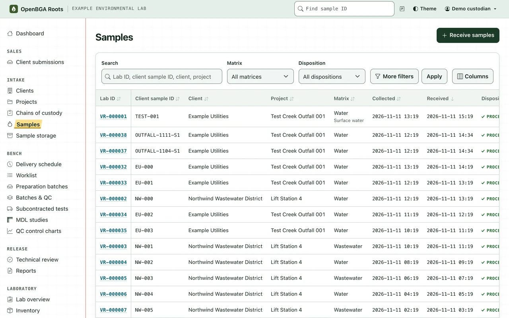
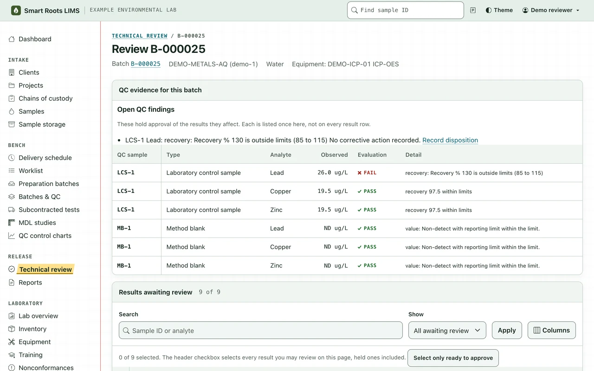
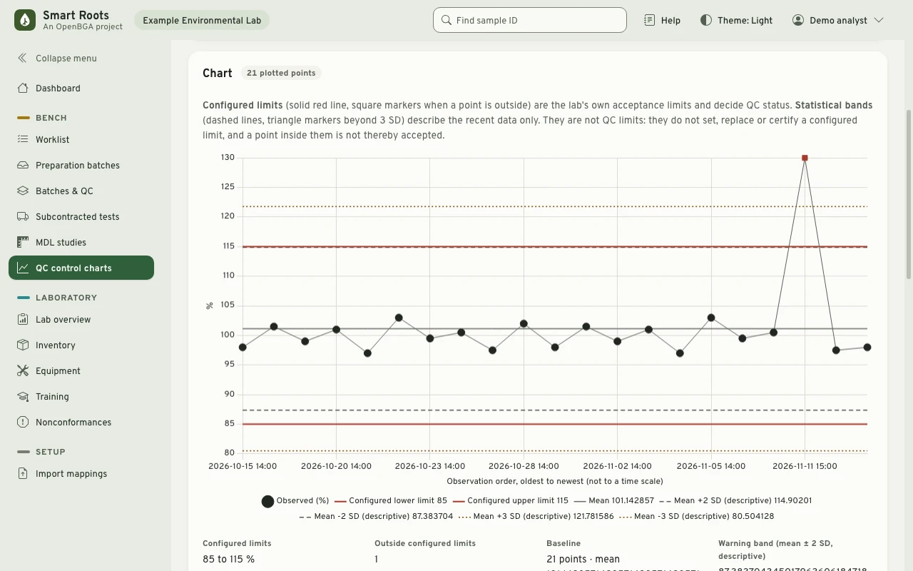
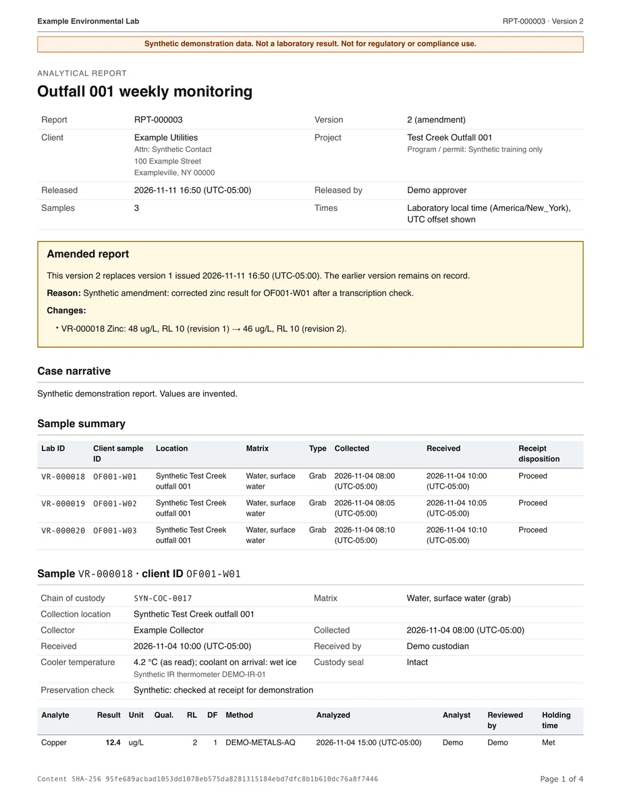

Smart roots.
Strong results.
Smart Roots LIMS is a free, open-source LIMS for US environmental laboratories testing water, wastewater and soil.
A result is only as strong as the record beneath it. Smart Roots LIMS keeps custody, method versions, QC and independent review connected to every result, from the cooler to the report your client receives.
AGPL-3.0-only · In development

From the cooler
to the client.
One connected record of the work, with the people, observations and decisions that belong to each step.
Receive
Record chain of custody, containers and receipt observations. Give every sample its laboratory identity.
Analyze
Organize preparation and analytical batches. Keep results with their units, limits, qualifiers and method versions.
Review
Evaluate QC and holding times. Independent review keeps analysts from reviewing their own results.
Release
Authorize a report version and make it available in the client portal. Amendments preserve earlier issued versions.
Results that keep
their roots.
The history under a result is part of the result. Smart Roots LIMS records it as the work happens and keeps it when something later changes.
- Nothing is overwritten
- A correction adds a record with its reason. Original observations, custody events and issued reports stay as they were recorded.
- Exact values
- Results are stored as exact decimals with their units, reporting limits, qualifiers and the method version that produced them.
- Independent review
- Nobody reviews their own results. That applies to administrators too.
- Explicit release
- Issuing a report takes a separate release authorization. Each issued version is a stored PDF; an amendment adds a new version beside it.
A closer look.
Three moments from the demo laboratory that ships with the project: a review, a control chart and an amended report.
Review
Review beside the evidence.
A reviewer works through a batch with its QC evaluation, holding-time findings, reporting limits and qualifiers on the same page, then approves each result or returns it with a reason. An open QC finding holds the results it affects.

Quality control
QC you can read at a glance.
Control charts plot each QC observation against the laboratory's configured limits, which decide QC status, beside descriptive statistical bands. MDL studies record their observations and calculations.

Reporting
The report your client receives.
Each release stores a PDF version with its content hash. An amendment names the version it replaces, the reason and what changed, and the earlier version stays on record. Clients download both from their own portal, where they see only their own projects, samples and reports.

The detail behind
the result.
Designed for one laboratory organization per deployment, with staff workspaces and access scoped to each client's records.
| Area | What stays with the work |
|---|---|
| Custody and receipt | Client and project records, collection times, container conditions, preservation observations and attributed custody events. |
| Analytical work | Preparation, batches, manual or mapped file entry, exact decimal results and the method version used. |
| Quality and review | Configured QC limits, holding-time findings, corrective dispositions and independent technical review. |
| Reports and delivery | Stored PDF report versions, release authorization, amendment history and client access. |
| Laboratory operations | Quotes, scheduling, subcontracted work, reagent lots, equipment, training and sample retention. |
Try it on
your machine.
With Docker and Compose installed, these commands build the application, start it beside a local PostgreSQL database and load a synthetic laboratory in the middle of a working week. It is reachable only from your machine and is meant for evaluation, not for real laboratory data.
git clone https://github.com/openbga/smart-roots-lims.git
cd smart-roots-lims
docker compose --profile app up --build -d
# Choose a private password of at least 12 characters.
read -s DEMO_PASSWORD; export DEMO_PASSWORD
docker compose --profile app exec -e DEMO_PASSWORD web \
python manage.py seed_demo --fullThen open http://127.0.0.1:8000 and sign in as demo_custodian, demo_analyst, demo_reviewer or another demo role with that password.
Meet the project.
Smart Roots LIMS is maintained in OpenBGA/smart-roots-lims. It uses Django and PostgreSQL, with a browser-based workspace for laboratory staff and clients.
Release validation is in progress. Use synthetic data while evaluating the software. Smart Roots LIMS supports laboratory records and quality systems; it does not certify compliance or accreditation.